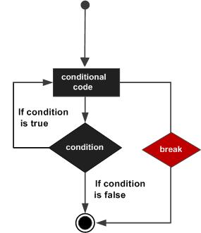
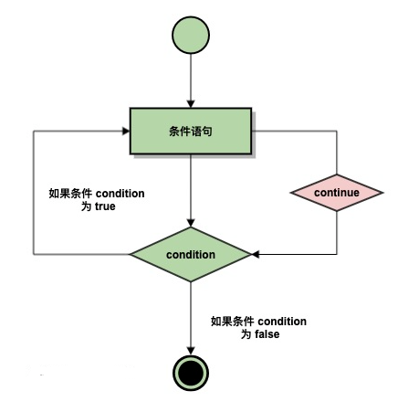

Index
C++ 简介
标准库
C++ 环境设置
C++ 基本语法
编译 & 执行 C++ 程序
C++ 中的分号 & 块
C++ 标识符
C++ 关键字
C++ 中的空格
C++ 注释
C++ 数据类型
枚举类型(迷惑？)
C++ 变量类型
C++ 中的变量定义
C++ 中的变量声明
C++ 中的左值（Lvalues）和右值（Rvalues）
C++ 变量作用域
全局变量和局部变量
C++ 常量
整数常量
浮点常量
布尔常量
字符常量
字符串常量
定义常量
1、define预处理器
2、const关键字
C++ 修饰符类型
C++ 中的类型限定符
C++ 存储类
1、auto 存储类
2、register 存储类
3、static 存储类
4、extern储存类（相当于定义一个可以多个文件共享的变量）
5、mutable储存类
C++ 运算符
1、算数运算符
2、关系运算符
3、逻辑运算符（与或非）
4、位运算符（二进制操作）
5、赋值运算符
6、杂项运算符
C++ 中的运算符优先级
C++ 循环及控制
1、循环类型
1、while 循环
2、for循环
3、do.....while....循环
4、嵌套的循环
2、循环控制语句
1、C++break语句（达到条件提前终止）
2、C++continue语句（额外增加一次判断，然后跳过原本执行的语句）
3、goto 语句 （满足某个条件直接蹦到执行某个命令）
无限循环
C++ 判断
1、判断语句
1、if语句
2、if-else语句
3、嵌套if
4、switch语句⭐️
2、? : 运算符
C++ 函数
1、函数定义
2、函数声明
3、函数参数
C++ 数字
1、C++定义数字
2、C++数学运算
3、C++随机数
C++ 数组
1、声明数组
2、初始化数组
3、多维数组
C++ 中数组其他相关内容详解
C++ 字符串
1、C风格字符串
C++ 中的 String 类
C++ 指针⭐️⭐️
什么是指针？
C++ NULL指针
C++ 指针的算术运算
1、递增一个指针
2、递减一个指针
3、指针的比较
C++指针VS数组
C++指针数组
C++ 指向指针的指针（多级间接寻址）
C++ 传递指针给函数
C++ 从函数返回指针/数组
C++ 指针总结及相关容易混淆概念
一，内存和地址
二，指针的本质就是地址
三，一些容易混淆的重要内容
1、常量指针与指针常量
2、指针与数组
4、指针函数与函数指针
C++ 引用（理解成一种特殊的指针）
1、基本定义
2、把引用作为函数参数
3、把引用作为函数返回值
C++ 基本的输入输出
1、I/O 库头文件
2、标准输出流（cout）
3、标准输入流（cin)
4、标准错误流（cerr)
5、标准日志流（clog)
C++ 数据结构
1、数据结构的定义
2、访问结构成员
3、结构作为函数参数
4、指向结构的指针
5、typedef关键字
C++ 简介[Top]
C++ 是一种静态类型的编译式的、通用的、大小写敏感的、不规则的编程语言，支持过程化编程、面向对象编程和泛型编程。
标准库[Top]
标准的 C++ 由三个重要部分组成：
- 核心语言，提供了所有构件块，包括变量、数据类型和常量，等等。
- C++ 标准库，提供了大量的函数，用于操作文件、字符串等。
- 标准模板库（STL），提供了大量的方法，用于操作数据结构等。
C++ 环境设置[Top]
编辑 and 编译
==编辑==：通过编辑器创建的文件通常称为源文件，源文件包含程序源代码。C++ 程序的源文件通常使用扩展名 .cpp、.cp 或 .c。
==编译==：它需要"编译"，转为机器语言，这样 CPU 可以按给定指令执行程序。
C++ 编译器用于把源代码编译成最终的可执行程序。大多数的 C++ 编译器并不在乎源文件的扩展名，但是如果您未指定扩展名，则默认使用 .cpp。
最常用的免费可用的编译器是 GNU 的 C/C++ 编译器，如果您使用的是 HP 或 Solaris，则可以使用各自操作系统上的编译器。
C++ 基本语法[Top]
C++ 程序可以定义为对象的集合，这些对象通过调用彼此的方法进行交互。现在让我们简要地看一下什么是类、对象，方法、即时变量。
- 对象 - 对象具有状态和行为。例如：一只狗的状态 - 颜色、名称、品种，行为 - 摇动、叫唤、吃。对象是类的实例。
- 类 - 类可以定义为描述对象行为/状态的模板/蓝图。
- 方法 - 从基本上说，一个方法表示一种行为。一个类可以包含多个方法。可以在方法中写入逻辑、操作数据以及执行所有的动作。
- 即时变量 - 每个对象都有其独特的即时变量。对象的状态是由这些即时变量的值创建的。
#include <iostream>
using namespace std;
// main() 是程序开始执行的地方
int main()
{
cout << "Hello World"; // 输出 Hello World return 0;
}
- C++ 语言定义了一些头文件，这些头文件包含了程序中必需的或有用的信息。上面这段程序中，包含了头文件
。 - 行 using namespace std; 告诉编译器使用 std 命名空间。命名空间是 C++ 中一个相对新的概念。
- 下一行 // main() 是程序开始执行的地方 是一个单行注释。单行注释以 // 开头，在行末结束。
- 下一行 int main() 是主函数，程序从这里开始执行。
- 下一行 cout << "Hello World"; 会在屏幕上显示消息 "Hello World"。
- 下一行 return 0; 终止 main( )函数，并向调用进程返回值 0。
编译 & 执行 C++ 程序[Top]
接下来让我们看看如何把源代码保存在一个文件中，以及如何编译并运行它。下面是简单的步骤：
- 打开一个文本编辑器，添加上述代码。
- 保存文件为 hello.cpp。
- 打开命令提示符，进入到保存文件所在的目录。
- 键入 'g++ hello.cpp '，输入回车，编译代码。如果代码中没有错误，命令提示符会跳到下一行，并生成 a.out 可执行文件。
- 现在，键入 ' a.out' 来运行程序。
- 您可以看到屏幕上显示 ' Hello World '。
C++ 中的分号 & 块[Top]
C++中默认以分号结尾才叫结束一句话，否则自然换行是不能被正确识别的
块是一组使用大括号括起来的按逻辑连接的语句
C++ 标识符[Top]
C++ 标识符是用来标识变量、函数、类、模块，或任何其他用户自定义项目的名称。一个标识符以字母 A-Z 或 a-z 或下划线 _ 开始，后跟零个或多个字母、下划线和数字（0-9）。
C++ 标识符内不允许出现标点字符，比如 @、$ 和 %。C++ 是区分大小写的编程语言。因此，在 C++ 中，Manpower 和 manpower 是两个不同的标识符。
mohd zara abc move_name a_123
myname50 _temp j a23b9 retVal
类比于Python中的变量命名空间
C++ 关键字[Top]
下表列出了 C++ 中的保留字。这些保留字不能作为常量名、变量名或其他标识符名称。
| asm | else | new | this |
|---|---|---|---|
| auto | enum | operator | throw |
| bool | explicit | private | true |
| break | export | protected | try |
| case | extern | public | typedef |
| catch | false | register | typeid |
| char | float | reinterpret_cast | typename |
| class | for | return | union |
| const | friend | short | unsigned |
| const_cast | goto | signed | using |
| continue | if | sizeof | virtual |
| default | inline | static | void |
| delete | int | static_cast | volatile |
| do | long | struct | wchar_t |
| double | mutable | switch | while |
| dynamic_cast | namespace | template |
C++ 中的空格[Top]
只包含空格的行，被称为空白行，可能带有注释，C++ 编译器会完全忽略它。
在 C++ 中，空格用于描述空白符、制表符、换行符和注释。空格分隔语句的各个部分，让编译器能识别语句中的某个元素（比如 int）在哪里结束，下一个元素在哪里开始。因此，在下面的语句中：
int age
//为了增加代码的可读性，有时候会在变量之间增加空格
fruit = apples + oranges; // 获取水果的总数
C++ 注释[Top]
注释包含单行注释和多行注释两种
- 单行注释用//表示即可，直到行末为止
- 多行注释使用/* */包围表示，可以跨行使用
注意：在使用时，两者嵌套使用时不会互相干扰，谁在外层谁的优先级就更高
C++ 数据类型[Top]
基本的内置类型
| 类型 | 关键字 |
|---|---|
| 布尔型 | bool |
| 字符型 | char |
| 整型 | int |
| 浮点型 | float |
| 双浮点型 | double |
| 无类型 | void |
| 宽字符型 | wchar_t |
一些基本类型可以使用一个或多个类型修饰符进行修饰：
- signed
- unsigned
- short
- long
下表显示了各种变量类型在内存中存储值时需要占用的内存，以及该类型的变量所能存储的最大值和最小值。
| 类型 | 位 | 范围 |
|---|---|---|
| char | 1 个字节 | -128 到 127 或者 0 到 255 |
| unsigned char | 1 个字节 | 0 到 255 |
| signed char | 1 个字节 | -128 到 127 |
| int | 4 个字节 | -2147483648 到 2147483647 |
| unsigned int | 4 个字节 | 0 到 4294967295 |
| signed int | 4 个字节 | -2147483648 到 2147483647 |
| short int | 2 个字节 | -32768 到 32767 |
| unsigned short int | 2 个字节 | 0 到 65,535 |
| signed short int | 2 个字节 | -32768 到 32767 |
| long int | 8 个字节 | -9,223,372,036,854,775,808 到 9,223,372,036,854,775,807 |
| signed long int | 8 个字节 | -9,223,372,036,854,775,808 到 9,223,372,036,854,775,807 |
| unsigned long int | 8 个字节 | 0 到 18,446,744,073,709,551,615 |
| float | 4 个字节 | 精度型占4个字节（32位）内存空间，+/- 3.4e +/- 38 (~7 个数字) |
| double | 8 个字节 | 双精度型占8 个字节（64位）内存空间，+/- 1.7e +/- 308(~15 个数字) |
| long double | 16 个字节 | 长双精度型 16 个字节（128位）内存空间，可提供18-19位有效数字。 |
| wchar_t | 2 或 4 个字节 | 1 个宽字符 |
类型关键字重新定义
例如： typedef int feet;
此时编译器将会认为feet就是关键词int，后续在定义时直接使用feet distance也可以定义一个名为distance的整形变量。
枚举类型(迷惑？)[Top]
枚举类型声明一个可选的类型名称和一组标识符，用来作为该类型的值。其带有零个或多个标识符可以被用来作为该类型的值。每个枚举数是一个枚举类型的常数。看不懂
枚举是C语言中的一种基本数据类型，并不是构造类型，它可以用于声明一组常数。当一个变量有几个固定的可能取值时，可以将这个变量定义为枚举类型。比如，你可以用一个枚举类型的变量来表示季节，因为季节只有4种可能的取值：春天、夏天、秋天、冬天。
创建枚举，需要使用关键字 enum。枚举类型的一般形式为：
//枚举结构
enum 枚举名 {枚举元素1,枚举元素2,……} 枚举变量;
enum enum-name { list of names } var-list;
//枚举的用法
1、赋值
enum Season {spring, summer, autumn, winter} s;
s = spring; // 等价于 s = 0;
s = 3; // 等价于 s = winter;
2、遍历元素
enum Season {spring, summer, autumn, winter} s;
// 遍历枚举元素
for (s = spring; s <= winter; s++) {
printf("枚举元素：%d \n", s);
}
C++ 变量类型[Top]
变量其实只不过是程序可操作的存储区的名称。C++ 中每个变量都有指定的类型，类型决定了变量存储的大小和布局，该范围内的值都可以存储在内存中，运算符可应用于变量上。
变量的名称可以由字母、数字和下划线字符组成。它必须以字母或下划线开头。大写字母和小写字母是不同的，因为 C++ 是大小写敏感的，具体的变量类型如上节中的表格所示
| 类型 | 描述 |
|---|---|
| bool | 存储值 true 或 false。 |
| char | 通常是一个八位字节（一个字节）。这是一个整数类型。 |
| int | 对机器而言，整数的最自然的大小。 |
| float | 单精度浮点值。 |
| double | 双精度浮点值。 |
| void | 表示类型的缺失。 |
| wchar_t | 宽字符类型。 |
C++ 也允许定义各种其他类型的变量，比如枚举、指针、数组、引用、数据结构、类等等，这将会在后续的章节中进行讲解
C++ 中的变量定义[Top]
典型定义结构
type variable_list;
在这里，type 必须是一个有效的 C++ 数据类型，可以是 char、w_char、int、float、double、bool 或任何用户自定义的对象，variable_list 可以由一个或多个标识符名称组成，多个标识符之间用逗号分隔。下面列出几个有效的声明：
int i, j, k;
char c, ch;
float f, salary;
double d;
//额外实例
extern int d = 3, f = 5; // d 和 f 的声明
int d = 3, f = 5; // 定义并初始化 d 和 f
byte z = 22; // 定义并初始化 z
char x = 'x'; // 变量 x 的值为 'x'
**不带初始化的定义：**带有静态存储持续时间的变量会被隐式初始化为 NULL（所有字节的值都是 0），其他所有变量的初始值是未定义的。
C++ 中的变量声明[Top]
extern关键字
当两个文件需要链接使用，两个文件中同时定义了一个重名的变量时，编译时是不会出现问题的，但是当运行时就会出现重复定义的问题。为了克服这个问题可以使用extern关键字（挖坑待填）
C++ 中的左值（Lvalues）和右值（Rvalues）[Top]
C++ 中有两种类型的表达式：
-
左值（lvalue）：指向内存位置的表达式被称为左值（lvalue）表达式。左值可以出现在赋值号的左边或右边。
-
右值（rvalue）：术语右值（rvalue）指的是存储在内存中某些地址的数值。右值是不能对其进行赋值的表达式，也就是说，右值可以出现在赋值号的右边，但不能出现在赋值号的左边。
右值是具体的数值，是在内存特定位置的一些数值，而左值则只是指示特定值在内存中位置的标签。
变量是左值，因此可以出现在赋值号的左边。数值型的字面值是右值，因此不能被赋值，不能出现在赋值号的左边。下面是一个有效的语句：
int g = 20;
但是下面这个就不是一个有效的语句，会生成编译时错误：
10 = 20;
C++ 变量作用域[Top]
作用域是程序的一个区域，一般来说有三个地方可以声明变量：
- 在函数或一个代码块内部声明的变量，称为局部变量。
- 在函数参数的定义中声明的变量，称为形式参数。
- 在所有函数外部声明的变量，称为全局变量
全局变量和局部变量[Top]
在所有函数外部定义的变量（通常是在程序的头部），称为全局变量。全局变量的值在程序的整个生命周期内都是有效的。
全局变量可以被任何函数访问。也就是说，全局变量一旦声明，在整个程序中都是可用的。下面的实例使用了全局变量和局部变量：
#include <iostream>
using namespace std;
// 全局变量声明
int g;
int main ()
{
// 局部变量声明
int a, b;
// 实际初始化
a = 10;
b = 20;
g = a + b;
cout << g; return 0;
}
// g = 30
//全局变量和局部变量可以同时定义，但是如果变量名相同是，局部变量会覆盖全局变量
值得注意的是，与python不同，变量可以单独被创建而不需要预先赋值，但是系统会默认给个值，可能会导致意外的错误，因此最好直接在定义变量的时候就直接把数值定义好。
当局部变量被定义时，系统不会对其初始化，您必须自行对其初始化。定义全局变量时，系统会自动初始化为下列值：
| 数据类型 | 初始化默认值 |
|---|---|
| int | 0 |
| char | '\0' |
| float | 0 |
| double | 0 |
| pointer | NULL |
C++ 常量[Top]
整数常量[Top]
常量是固定值，在程序执行期间不会改变。这些固定的值，又叫做字面量。
常量可以是任何的基本数据类型，可分为整型数字、浮点数字、字符、字符串和布尔值。
常量就像是常规的变量，只不过常量的值在定义后不能进行修改。
整数常量可以是十进制、八进制或十六进制的常量。前缀指定基数：0x 或 0X 表示十六进制，0 表示八进制，不带前缀则默认表示十进制。
整数常量也可以带一个后缀，后缀是 U 和 L 的组合，U 表示无符号整数（unsigned），L 表示长整数（long）。后缀可以是大写，也可以是小写，U 和 L 的顺序任意。
常量实例
212 // 合法的
215u // 合法的
0xFeeL // 合法的
078 // 非法的：8 不是八进制的数字
032UU // 非法的：不能重复后缀
✅正确常量实例
85 // 十进制
0213 // 八进制
0x4b // 十六进制
30 // 整数
30u // 无符号整数
30l // 长整数
30ul // 无符号长整数
浮点常量[Top]
浮点常量由整数部分、小数点、小数部分和指数部分组成。您可以使用小数形式或者指数形式来表示浮点常量。
当使用小数形式表示时，必须包含小数点、指数，或同时包含两者。当使用指数形式表示时，必须包含整数部分、小数部分，或同时包含两者。带符号的指数是用 e 或 E 引入的。
3.14159 // 合法的
314159E-5L // 合法的
510E // 非法的：不完整的指数
210f // 非法的：没有小数或指数
.e55 // 非法的：缺少整数或分数
布尔常量[Top]
布尔常量共有两个，它们都是标准的 C++ 关键字：
- true 值代表真。
- false 值代表假。
我们不应把 true 的值看成 1，把 false 的值看成 0。
字符常量[Top]
字符常量是括在单引号中。如果常量以 L（仅当大写时）开头，则表示它是一个宽字符常量（例如 L'x'），此时它必须存储在 wchar_t 类型的变量中。否则，它就是一个窄字符常量（例如 'x'），此时它可以存储在 char 类型的简单变量中。
字符常量可以是一个普通的字符（例如 'x'）、一个转义序列（例如 '\t'），或一个通用的字符（例如 '\u02C0'）。
在 C++ 中，有一些特定的字符，当它们前面有反斜杠时，它们就具有特殊的含义，被用来表示如换行符（\n）或制表符（\t）等。下表列出了一些这样的转义序列码：
| 转义序列 | 含义 |
|---|---|
| \ | \ 字符 |
| ' | ' 字符 |
| " | " 字符 |
| ? | ? 字符 |
| \a | 警报铃声 |
| \b | 退格键 |
| \f | 换页符 |
| \n | 换行符 |
| \r | 回车 |
| \t | 水平制表符 |
| \v | 垂直制表符 |
| \ooo | 一到三位的八进制数 |
| \xhh . . . | 一个或多个数字的十六进制数 |
字符串常量[Top]
字符串字面值或常量是括在双引号 "" 中的。一个字符串包含类似于字符常量的字符：普通的字符、转义序列和通用的字符。
您可以使用空格做分隔符，把一个很长的字符串常量进行分行。
定义常量[Top]
在 C++ 中，有两种简单的定义常量的方式：
- 使用 #define 预处理器。
- 使用 const 关键字。
1、define预处理器[Top]
下面是使用 #define 预处理器定义常量的形式：
#define identifier value
一个例子
#include <iostream>
using namespace std;
#define LENGTH 10
#define WIDTH 5
#define NEWLINE '\n'
int main()
{
int area;
area = LENGTH * WIDTH;
cout << area;
cout << NEWLINE;
return 0;
}
//输出结果 50
2、const关键字[Top]
const type variable = value;
一个例子
#include <iostream>
using namespace std;
int main()
{
const int LENGTH = 10;
const int WIDTH = 5;
const char NEWLINE = '\n';
int area;
area = LENGTH * WIDTH;
cout << area;
cout << NEWLINE;
return 0;
}
==请注意，把常量定义为大写字母形式，是一个很好的编程实践。==
此外，define和const是两种不同的定义方式，denfine的定义优先级好像要高于const，通过define方法定义后的变量就不可以再被const利用
C++ 修饰符类型[Top]
C++ 允许在 char、int 和 double 数据类型前放置修饰符。修饰符用于改变基本类型的含义，所以它更能满足各种情境的需求。
下面列出了数据类型修饰符：
- signed
- unsigned
- long
- short
修饰符 signed、unsigned、long 和 short 可应用于整型，signed 和 unsigned 可应用于字符型，long 可应用于双精度型。
修饰符 signed 和 unsigned 也可以作为 long 或 short 修饰符的前缀。例如：unsigned long int。
C++ 允许使用速记符号来声明无符号短整数或无符号长整数。您可以不写 int，只写单词 unsigned short 或 unsigned long，int 是隐含的。例如，下面的两个语句都声明了无符号整型变量。
例如
unsigned x;
unsigned int y;
为了理解 C++ 解释有符号整数和无符号整数修饰符之间的差别，我们来运行一下下面这个短程序：
#include <iostream>
using namespace std;
/*
* 这个程序演示了有符号整数和无符号整数之间的差别
*/
int main()
{
short int i; // 有符号短整数
short unsigned int j; // 无符号短整数
j = 50000;
i = j;
cout << i << " " << j;
return 0;
}
输出结果为-15536 50000
上述结果中，无符号短整数 50,000 的位模式被解释为有符号短整数 -15,536。
C++ 中的类型限定符[Top]
类型限定符提供了变量的额外信息。
| 限定符 | 含义 |
|---|---|
| const | const 类型的对象在程序执行期间不能被修改改变。 |
| volatile | 修饰符 volatile 告诉编译器，变量的值可能以程序未明确指定的方式被改变。 |
| restrict | 由 restrict 修饰的指针是唯一一种访问它所指向的对象的方式。只有 C99 增加了新的类型限定符 restrict。 |
C++ 存储类[Top]
存储类定义 C++ 程序中变量/函数的范围（可见性）和生命周期。这些说明符放置在它们所修饰的类型之前。下面列出 C++ 程序中可用的存储类：
- auto
- register
- static
- extern
- mutable
1、auto 存储类[Top]
auto 存储类是所有局部变量默认的存储类。
{
int mount;
auto int month;
}
在函数中定义局部变量时，系统默认认为其为auto储存类
2、register 存储类[Top]
register 存储类用于定义存储在寄存器中而不是 RAM 中的局部变量。这意味着变量的最大尺寸等于寄存器的大小（通常是一个词），且不能对它应用一元的 '&' 运算符（因为它没有内存位置）。
{
register int miles;
}
寄存器只用于需要快速访问的变量，比如计数器。还应注意的是，定义 'register' 并不意味着变量将被存储在寄存器中，它意味着变量可能存储在寄存器中，这取决于硬件和实现的限制。
3、static 存储类[Top]
static 存储类指示编译器在程序的生命周期内保持局部变量的存在，而不需要在每次它进入和离开作用域时进行创建和销毁。因此，使用 static 修饰局部变量可以在函数调用之间保持局部变量的值。
static 修饰符也可以应用于全局变量。当 static 修饰全局变量时，会使变量的作用域限制在声明它的文件内。全局变量默认就是static类型。
在 C++ 中，当 static 用在类数据成员上时，会导致仅有一个该成员的副本被类的所有对象共享。
4、extern储存类（相当于定义一个可以多个文件共享的变量）[Top]
extern 存储类用于提供一个全局变量的引用，全局变量对所有的程序文件都是可见的。当您使用 'extern' 时，对于无法初始化的变量，会把变量名指向一个之前定义过的存储位置。
当您有多个文件且定义了一个可以在其他文件中使用的全局变量或函数时，可以在其他文件中使用 extern 来得到已定义的变量或函数的引用。可以这么理解，extern 是用来在另一个文件中声明一个全局变量或函数。
extern 修饰符通常用于当有两个或多个文件共享相同的全局变量或函数的时候，如下所示：
一个例子🌰：
☝🏻第一个文件：main.cpp
#include <iostream>
int count ;
extern void write_extern();
main()
{
count = 5;
write_extern();
}
2️⃣第二个文件：support.cpp
#include <iostream>
extern int count;
void write_extern(void)
{
std::cout << "Count is " << count << std::endl;
}
在这里，第二个文件中的 extern 关键字用于声明已经在第一个文件 main.cpp 中定义的 count。现在 ，编译这两个文件，如下所示：
联立编译
$g++ main.cpp support.cpp -o write
然后运行输出的write文件便可以输出
Count is 5
在这里，我的理解相当于extern类似于python中的import函数，可以跨文件声明及引用变量及函数定义，使多个文件可以联立使用
5、mutable储存类[Top]
mutable 说明符仅适用于类的对象，这将在本教程的最后进行讲解。它允许对象的成员替代常量。也就是说，mutable 成员可以通过 const 成员函数修改。
C++ 运算符[Top]
运算符是一种告诉编译器执行特定的数学或逻辑操作的符号。C++ 内置了丰富的运算符，并提供了以下类型的运算符：
- 算术运算符
- 关系运算符
- 逻辑运算符
- 位运算符
- 赋值运算符
- 杂项运算符
1、算数运算符[Top]
也即一般的加减乘除等基本操作的符号，具体的如下表所示：
假设变量 A 的值为 10，变量 B 的值为 20，则：
| 运算符 | 描述 | 实例 |
|---|---|---|
| + | 把两个操作数相加 | A + B 将得到 30 |
| - | 从第一个操作数中减去第二个操作数 | A - B 将得到 -10 |
| * | 把两个操作数相乘 | A * B 将得到 200 |
| / | 分子除以分母 | B / A 将得到 2 |
| % | 取模运算符，整除后的余数 | B % A 将得到 0 |
| ++ | 自增运算符，整数值增加 1 | A++ 将得到 11 |
| -- | 自减运算符，整数值减少 1 | A-- 将得到 9 |
2、关系运算符[Top]
下表显示了 C++ 支持的所有关系运算符。
假设变量 A 的值为 10，变量 B 的值为 20，则：
| 运算符 | 描述 | 实例 |
|---|---|---|
| == | 检查两个操作数的值是否相等，如果相等则条件为真。 | (A == B) 不为真。 |
| != | 检查两个操作数的值是否相等，如果不相等则条件为真。 | (A != B) 为真。 |
| > | 检查左操作数的值是否大于右操作数的值，如果是则条件为真。 | (A > B) 不为真。 |
| < | 检查左操作数的值是否小于右操作数的值，如果是则条件为真。 | (A < B) 为真。 |
| >= | 检查左操作数的值是否大于或等于右操作数的值，如果是则条件为真。 | (A >= B) 不为真。 |
| <= | 检查左操作数的值是否小于或等于右操作数的值，如果是则条件为真。 | (A <= B) 为真。 |
3、逻辑运算符（与或非）[Top]
假设变量 A 的值为 1，变量 B 的值为 0，则：
| 运算符 | 描述 | 实例 |
|---|---|---|
| && | 称为逻辑与运算符。如果两个操作数都非零，则条件为真。 | (A && B) 为假。 |
| || | 称为逻辑或运算符。如果两个操作数中有任意一个非零，则条件为真。 | (A || B) 为真。 |
| ! | 称为逻辑非运算符。用来逆转操作数的逻辑状态。如果条件为真则逻辑非运算符将使其为假。 | !(A && B) 为真。 |
4、位运算符（二进制操作）[Top]
位运算符作用于位，并逐位执行操作。&、 | 和 ^ 的真值表如下所示：
| p | q | p & q | p | q | p ^ q |
|---|---|---|---|---|
| 0 | 0 | 0 | 0 | 0 |
| 0 | 1 | 0 | 1 | 1 |
| 1 | 1 | 1 | 1 | 0 |
| 1 | 0 | 0 | 1 | 1 |
假设如果 A = 60，且 B = 13，现在以二进制格式表示，它们如下所示：
A = 0011 1100
B = 0000 1101
-----------------
A&B = 0000 1100
A|B = 0011 1101
A^B = 0011 0001
~A = 1100 0011
也就是对数字先转化成二进制，然后再对二进制数字进行调整
下表显示了 C++ 支持的位运算符。假设变量 A 的值为 60，变量 B 的值为 13，则：
| 运算符 | 描述 | 实例 |
|---|---|---|
| & | 如果同时存在于两个操作数中，二进制 AND 运算符复制一位到结果中。 | (A & B) 将得到 12，即为 0000 1100 |
| | | 如果存在于任一操作数中，二进制 OR 运算符复制一位到结果中。 | (A | B) 将得到 61，即为 0011 1101 |
| ^ | 如果存在于其中一个操作数中但不同时存在于两个操作数中，二进制异或运算符复制一位到结果中。 | (A ^ B) 将得到 49，即为 0011 0001 |
| ~ | 二进制补码运算符是一元运算符，具有"翻转"位效果。 | (~A ) 将得到 -61，即为 1100 0011，2 的补码形式，带符号的二进制数。 |
| << | 二进制左移运算符。左操作数的值向左移动右操作数指定的位数。 | A << 2 将得到 240，即为 1111 0000 |
| >> | 二进制右移运算符。左操作数的值向右移动右操作数指定的位数。 | A >> 2 将得到 15，即为 0000 1111 |
5、赋值运算符[Top]
下表列出了 C++ 支持的赋值运算符：
| 运算符 | 描述 | 实例 |
|---|---|---|
| = | 简单的赋值运算符，把右边操作数的值赋给左边操作数 | C = A + B 将把 A + B 的值赋给 C |
| += | 加且赋值运算符，把右边操作数加上左边操作数的结果赋值给左边操作数 | C += A 相当于 C = C + A |
| -= | 减且赋值运算符，把左边操作数减去右边操作数的结果赋值给左边操作数 | C -= A 相当于 C = C - A |
| *= | 乘且赋值运算符，把右边操作数乘以左边操作数的结果赋值给左边操作数 | C *= A 相当于 C = C * A |
| /= | 除且赋值运算符，把左边操作数除以右边操作数的结果赋值给左边操作数 | C /= A 相当于 C = C / A |
| %= | 求模且赋值运算符，求两个操作数的模赋值给左边操作数 | C %= A 相当于 C = C % A |
| <<= | 左移且赋值运算符 | C <<= 2 等同于 C = C << 2 |
| >>= | 右移且赋值运算符 | C >>= 2 等同于 C = C >> 2 |
| &= | 按位与且赋值运算符 | C &= 2 等同于 C = C & 2 |
| ^= | 按位异或且赋值运算符 | C ^= 2 等同于 C = C ^ 2 |
| |= | 按位或且赋值运算符 | C |= 2 等同于 C = C | 2 |
6、杂项运算符[Top]
下表列出了 C++ 支持的其他一些重要的运算符。
| 运算符 | 描述 |
|---|---|
| sizeof | sizeof 运算符返回变量的大小。例如，sizeof(a) 将返回 4，其中 a 是整数。 |
| Condition ? X : Y | 条件运算符。如果 Condition 为真 ? 则值为 X : 否则值为 Y。 |
| , | 逗号运算符会顺序执行一系列运算。整个逗号表达式的值是以逗号分隔的列表中的最后一个表达式的值。 |
| .（点）和 ->（箭头） | 成员运算符用于引用类、结构和共用体的成员。 |
| Cast | 强制转换运算符把一种数据类型转换为另一种数据类型。例如，int(2.2000) 将返回 2。 |
| & | 指针运算符 & 返回变量的地址。例如 &a; 将给出变量的实际地址。 |
| * | 指针运算符 * 指向一个变量。例如，*var; 将指向变量 var。 |
C++ 中的运算符优先级[Top]
运算符的优先级确定表达式中项的组合。这会影响到一个表达式如何计算。某些运算符比其他运算符有更高的优先级，例如，乘除运算符具有比加减运算符更高的优先级。
例如 x = 7 + 3 * 2，在这里，x 被赋值为 13，而不是 20，因为运算符 * 具有比 + 更高的优先级，所以首先计算乘法 3*2，然后再加上 7。
下表将按运算符优先级从高到低列出各个运算符，具有较高优先级的运算符出现在表格的上面，具有较低优先级的运算符出现在表格的下面。在表达式中，较高优先级的运算符会优先被计算。
| 类别 | 运算符 | 结合性 |
|---|---|---|
| 后缀 | () [] -> . ++ - - | 从左到右 |
| 一元 | + - ! ~ ++ - - (type)* & sizeof | 从右到左 |
| 乘除 | * / % | 从左到右 |
| 加减 | + - | 从左到右 |
| 移位 | << >> | 从左到右 |
| 关系 | < <= > >= | 从左到右 |
| 相等 | == != | 从左到右 |
| 位与 AND | & | 从左到右 |
| 位异或 XOR | ^ | 从左到右 |
| 位或 OR | | | 从左到右 |
| 逻辑与 AND | && | 从左到右 |
| 逻辑或 OR | || | 从左到右 |
| 条件 | ?: | 从右到左 |
| 赋值 | = += -= *= /= %=>>= <<= &= ^= |= | 从右到左 |
| 逗号 | , | 从左到右 |
C++ 循环及控制[Top]
1、循环类型[Top]
C++ 编程语言提供了以下几种循环类型。点击链接查看每个类型的细节。
| 循环类型 | 描述 |
|---|---|
| while 循环 | 当给定条件为真时，重复语句或语句组。它会在执行循环主体之前测试条件。 |
| for 循环 | 多次执行一个语句序列，简化管理循环变量的代码。 |
| do...while 循环 | 除了它是在循环主体结尾测试条件外，其他与 while 语句类似。 |
| 嵌套循环 | 您可以在 while、for 或 do..while 循环内使用一个或多个循环。 |
1、while 循环[Top]
只要给定的条件为真，while 循环语句会重复执行一个目标语句。
语法⭐️
while(condition) (!!这里没有分号)
{
statement(s);
}
一个例子🌰
#include <iostream>
using namespace std;
int main ()
{
// 局部变量声明
int a = 10;
// while 循环执行
while( a < 20 )
{
cout << "a 的值：" << a << endl;
a++;
}
return 0;
}
2、for循环[Top]
for 循环允许您编写一个执行特定次数的循环的重复控制结构。
语法⭐️
for (init; condition; increment)
{
statement(s);
}
下面是 for 循环的控制流：
-
init 会首先被执行，且只会执行一次。这一步允许您声明并初始化任何循环控制变量。您也可以不在这里写任何语句，只要有一个分号出现即可。
-
接下来，会判断 condition。如果为真，则执行循环主体。如果为假，则不执行循环主体，且控制流会跳转到紧接着 for 循环的下一条语句。
-
在执行完 for 循环主体后，控制流会跳回上面的 increment 语句。该语句允许您更新循环控制变量。该语句可以留空，只要在条件后有一个分号出现即可。
-
条件再次被判断。如果为真，则执行循环，这个过程会不断重复（循环主体，然后增加步值，再然后重新判断条件）。在条件变为假时，for 循环终止。
一个例子🌰
#include <iostream>
using namespace std;
int main ()
{
// for 循环执行
for( int a = 10; a < 20; a = a + 1 )
{
cout << "a 的值：" << a << endl;
}
return 0;
}
3、do.....while....循环[Top]
不像 for 和 while 循环，它们是在循环头部测试循环条件。do...while 循环是在循环的尾部检查它的条件。
do...while 循环与 while 循环类似，但是 do...while 循环会确保至少执行一次循环。
语法⭐️
do
{
statement(s);
}while( condition ); (!!!需要注意，这里反而有一个分号)
请注意，条件表达式出现在循环的尾部，所以循环中的 statement(s) 会在条件被测试之前至少执行一次。
如果条件为真，控制流会跳转回上面的 do，然后重新执行循环中的 statement(s)。这个过程会不断重复，直到给定条件变为假为止。
一个例子🌰
#include <iostream>
using namespace std;
int main ()
{
// 局部变量声明
int a = 10;
// do 循环执行
do
{
cout << "a 的值：" << a << endl;
a = a + 1;
}while( a < 20 );
return 0;
}
4、嵌套的循环[Top]
一个循环内可以嵌套另一个循环。C++ 允许至少 256 个嵌套层次。
C++ 中 嵌套 for 循环 语句的语法：
for ( init; condition; increment )
{
for ( init; condition; increment )
{
statement(s);
}
statement(s); // 可以放置更多的语句
}
C++ 中 嵌套 while 循环 语句的语法：
while(condition)
{
while(condition)
{
statement(s);
}
statement(s); // 可以放置更多的语句
}
C++ 中 嵌套 do...while 循环 语句的语法：
do
{
statement(s); // 可以放置更多的语句
do
{
statement(s);
}while( condition );
}while( condition );
此外 多种循环可以相互嵌套
2、循环控制语句[Top]
循环控制语句更改执行的正常序列。当执行离开一个范围时，所有在该范围中创建的自动对象都会被销毁。
C++ 提供了下列的控制语句。点击链接查看每个语句的细节。
| 控制语句 | 描述 |
|---|---|
| break 语句 | 终止 loop 或 switch 语句，程序流将继续执行紧接着 loop 或 switch 的下一条语句。 |
| continue 语句 | 引起循环跳过主体的剩余部分，立即重新开始测试条件。 |
| goto 语句 | 将控制转移到被标记的语句。但是不建议在程序中使用 goto 语句。 |
1、C++break语句（达到条件提前终止）[Top]
C++ 中 break 语句有以下两种用法：
- 当 break 语句出现在一个循环内时，循环会立即终止，且程序流将继续执行紧接着循环的下一条语句。
- 它可用于终止 switch 语句中的一个 case。
如果您使用的是嵌套循环（即一个循环内嵌套另一个循环），break 语句会停止执行最内层的循环，然后开始执行该块之后的下一行代码。

#include <iostream>
using namespace std;
int main ()
{
// 局部变量声明
int a = 10;
// do 循环执行
do
{
cout << "a 的值：" << a << endl;
a = a + 1;
if( a > 15)
{
// 终止循环
break;
}
}while( a < 20 );
return 0;
}
2、C++continue语句（额外增加一次判断，然后跳过原本执行的语句）[Top]
C++ 中的 continue 语句有点像 break 语句。但它不是强迫终止，continue 会跳过当前循环中的代码，强迫开始下一次循环。
对于 for 循环，continue 语句会导致执行条件测试和循环增量部分。对于 while 和 do...while 循环，continue 语句会导致程序控制回到条件测试上。

一个例子🌰
#include <iostream>
using namespace std;
int main ()
{
// 局部变量声明
int a = 10;
// do 循环执行
do
{
if( a == 15)
{
// 跳过迭代
a = a + 1;
continue;
}
cout << "a 的值：" << a << endl;
a = a + 1;
}while( a < 20 );
return 0;
}
/////////////////输出结果//////////////////////
a 的值： 10
a 的值： 11
a 的值： 12
a 的值： 13
a 的值： 14（因为continue的存在的导致直接越过了15）
a 的值： 16
a 的值： 17
a 的值： 18
a 的值： 19
3、goto 语句 （满足某个条件直接蹦到执行某个命令）[Top]
goto 语句允许把控制无条件转移到同一函数内的被标记的语句。
C++ 中 goto 语句的语法：
goto label;
..
.
label: statement;
//在这里，label 是识别被标记语句的标识符，可以是任何除 C++ 关键字以外的纯文本。标记语句可以是任何语句，放置在标识符和冒号（:）后边。

一个例子🌰
#include<iostream>
using namespace std;
int main()
{
int x,sum=0;
//定义标号L1
L1: cout<<"x=";
cin>>x;
if (x==-1)
goto L2; //当用户输入-1时，转到L2语句处
else
sum+=x;
goto L1; //只要用户没有输入-1，则转到L1语句处，程序一直将用户的输入默默地累加到变量sum中。
//定义标号L2
L2: cout<<"sum="<<sum<<endl;//一旦转到L2，将输出累计结果，程序运行结束。
system("pause");
}
无限循环[Top]
如果条件永远不为假则可以完成无限循环，语法比如for（；；）
C++ 判断[Top]
判断结构要求程序员指定一个或多个要评估或测试的条件，以及条件为真时要执行的语句（必需的）和条件为假时要执行的语句（可选的）。
1、判断语句[Top]
C++ 编程语言提供了以下类型的判断语句。点击链接查看每个语句的细节。
| 语句 | 描述 |
|---|---|
| if 语句 | 一个 if 语句 由一个布尔表达式后跟一个或多个语句组成。 |
| if...else 语句 | 一个 if 语句 后可跟一个可选的 else 语句，else 语句在布尔表达式为假时执行。 |
| 嵌套 if 语句 | 您可以在一个 if 或 else if 语句内使用另一个 if 或 else if 语句。 |
| switch 语句 | 一个 switch 语句允许测试一个变量等于多个值时的情况。 |
| 嵌套 switch 语句 | 您可以在一个 switch 语句内使用另一个 switch 语句。 |
1、if语句[Top]
一个 if 语句 由一个布尔表达式后跟一个或多个语句组成。
C++ 中 if 语句的语法：
if(boolean_expression)
{
// 如果布尔表达式为真将执行的语句；
}
2、if-else语句[Top]
一个 if 语句 后可跟一个可选的 else 语句，else 语句在布尔表达式为假时执行。
C++ 中 if...else 语句的语法：
if(boolean_expression)
{
// 如果布尔表达式为真将执行的语句；
}
else
{
// 如果布尔表达式为假将执行的语句；
}
if-else进阶版⭐️
C++ 中的 if...else if...else 语句的语法：
if(boolean_expression 1)
{
// 当布尔表达式 1 为真时执行
}
else if( boolean_expression 2)
{
// 当布尔表达式 2 为真时执行
}
else if( boolean_expression 3)
{
// 当布尔表达式 3 为真时执行
}
else
{
// 当上面条件都不为真时执行
}
3、嵌套if[Top]
C++ 中 嵌套 if 语句的语法：
if( boolean_expression 1)
{
// 当布尔表达式 1 为真时执行
if(boolean_expression 2)
{
// 当布尔表达式 2 为真时执行
}
}
4、switch语句⭐️[Top]
一个 switch 语句允许测试一个变量等于多个值时的情况。每个值称为一个 case，且被测试的变量会对每个 switch case 进行检查。
C++ 中 switch 语句的语法：
switch(expression){
case constant-expression :
statement(s);
break; // 可选的
case constant-expression :
statement(s);
break; // 可选的
// 您可以有任意数量的 case 语句
default : // 可选的
statement(s);
}
switch 语句必须遵循下面的规则：
- switch 语句中的 expression 必须是一个整型或枚举类型，或者是一个 class 类型，其中 class 有一个单一的转换函数将其转换为整型或枚举类型。
- 在一个 switch 中可以有任意数量的 case 语句。每个 case 后跟一个要比较的值和一个冒号。
- case 的 constant-expression 必须与 switch 中的变量具有相同的数据类型，且必须是一个常量或字面量。
- 当被测试的变量等于 case 中的常量时，case 后跟的语句将被执行，直到遇到 break 语句为止。
- 当遇到 break 语句时，switch 终止，控制流将跳转到 switch 语句后的下一行。
- 不是每一个 case 都需要包含 break。如果 case 语句不包含 break，控制流将会 继续 后续的 case，直到遇到 break 为止。
- 一个 switch 语句可以有一个可选的 default case，出现在 switch 的结尾。default case 可用于在上面所有 case 都不为真时执行一个任务。default case 中的 break 语句不是必需的。
一个例子🌰
#include <iostream>
using namespace std;
int main ()
{
// 局部变量声明
char grade = 'D';
switch(grade)
{
case 'A' :
cout << "很棒！" << endl;
break;
case 'B' :
case 'C' :
cout << "做得好" << endl;
break;
case 'D' :
cout << "您通过了" << endl;
break;
case 'F' :
cout << "最好再试一下" << endl;
break;
default :
cout << "无效的成绩" << endl;
}
cout << "您的成绩是 " << grade << endl;
return 0;
}
同样的，switch语句也可以被嵌套使用
C++ 中 嵌套 switch 语句的语法：
switch(ch1) {
case 'A':
cout << "这个 A 是外部 switch 的一部分";
switch(ch2) {
case 'A':
cout << "这个 A 是内部 switch 的一部分";
break;
case 'B': // 内部 B case 代码
}
break;
case 'B': // 外部 B case 代码
}
2、? : 运算符[Top]
我们已经在前面的章节中讲解了 条件运算符 ? :，可以用来替代 if...else 语句。它的一般形式如下：
Exp1 ? Exp2 : Exp3;
其中，Exp1、Exp2 和 Exp3 是表达式。请注意，冒号的使用和位置。
? 表达式的值是由 Exp1 决定的。如果 Exp1 为真，则计算 Exp2 的值，结果即为整个 ? 表达式的值。如果 Exp1 为假，则计算 Exp3 的值，结果即为整个 ? 表达式的值。
一个例子🌰
//if-else写法
if(a<10){
var=10
}
else{
var=20
}
//expression写法
var = (a<10)?10:20;
C++ 函数[Top]
函数是一组一起执行一个任务的语句。每个 C++ 程序都至少有一个函数，即主函数 main() ，所有简单的程序都可以定义其他额外的函数。
您可以把代码划分到不同的函数中。如何划分代码到不同的函数中是由您来决定的，但在逻辑上，划分通常是根据每个函数执行一个特定的任务来进行的。
函数声明告诉编译器函数的名称、返回类型和参数。函数定义提供了函数的实际主体。
C++ 标准库提供了大量的程序可以调用的内置函数。例如，函数 strcat() 用来连接两个字符串，函数 memcpy() 用来复制内存到另一个位置。
函数还有很多叫法，比如方法、子例程或程序，等等。
1、函数定义[Top]
C++ 中的函数定义的一般形式如下：
⭐️ 定义函数时注意不要从主函数main()内部定义，只能从主函数体内部调用
return_type funcition_name ( parameter_list )
{
body of the function
}
在 C++ 中，函数由一个函数头和一个函数主体组成。下面列出一个函数的所有组成部分：
- **返回类型：**一个函数可以返回一个值。return_type 是函数返回的值的数据类型。有些函数执行所需的操作而不返回值，在这种情况下，return_type 是关键字 void。
- **函数名称：**这是函数的实际名称。函数名和参数列表一起构成了函数签名。
- **参数：**参数就像是占位符。当函数被调用时，您向参数传递一个值，这个值被称为实际参数。参数列表包括函数参数的类型、顺序、数量。参数是可选的，也就是说，函数可能不包含参数。
- **函数主体：**函数主体包含一组定义函数执行任务的语句。
一个例子🌰
以下是 max() 函数的源代码。该函数有两个参数 num1 和 num2，会返回这两个数中较大的那个数：
// 函数返回两个数中较大的那个数
int max(int num1, int num2)
{
// 局部变量声明
int result;
if (num1 > num2)
result = num1;
else
result = num2;
return result;
}
Tips📢：在函数变量定义时也可以添加形参的默认值，以后在使用的使用可以不赋值直接用，跟python中的使用方法一样。
2、函数声明[Top]
函数声明会告诉编译器函数名称及如何调用函数。函数的实际主体可以单独定义。
函数声明包括以下几个部分：
return_type function_name( parameter list );
针对上面定义的函数 max()，以下是函数声明：
int max(int num1, int num2);
在函数声明中，参数的名称并不重要，只有参数的类型是必需的，因此下面也是有效的声明：
int max(int, int);
⭐️当您在一个源文件中定义函数且在另一个文件中调用函数时，函数声明是必需的。在这种情况下，您应该在调用函数的文件顶部声明函数。也就是相当于python中的import函数，或者是相当于从其他文件中引用变量的extern函数⭐️
也就是说使用到函数声明的时候一共有两种情况：
- 因为代码是从上到下执行的，如果先定义后引用函数则不需要声明，反之如果先应用而函数定义部分在后面时则需要在文件开头添加函数声明部分
- 第二种情况，在某个文件中定义了函数后，想要在另一个文件中引用这个函数，则需要在这个文件的开头部分添加函数声明，也就类比与python中的import函数
3、函数参数[Top]
如果函数要使用参数，则必须声明接受参数值的变量。这些变量称为函数的形式参数。
形式参数就像函数内的其他局部变量，在进入函数时被创建，退出函数时被销毁。
当调用函数时，有两种向函数传递参数的方式：
| 调用类型 | 描述 |
|---|---|
| 传值调用 （默认） | 该方法把参数的实际值复制给函数的形式参数。在这种情况下，修改函数内的形式参数对实际参数没有影响。 |
| 指针调用 | 该方法把参数的地址复制给形式参数。在函数内，该地址用于访问调用中要用到的实际参数。这意味着，修改形式参数会影响实际参数。 |
| 引用调用 | 该方法把参数的引用复制给形式参数。在函数内，该引用用于访问调用中要用到的实际参数。这意味着，修改形式参数会影响实际参数。 |
一个例子🌰
// 函数定义
//第一种
/////////////////引用形式/////////////////
void swap(int x, int y)
{
int temp;
temp = x; /* 保存 x 的值 */
x = y; /* 把 y 赋值给 x */
y = temp; /* 把 x 赋值给 y */
return;
}
/////////////////////////////////////////
//第二种
/////////////////指针形式/////////////////
void swap(int *x, int *y)
{
int temp;
temp = *x; /* 保存地址 x 的值 */
*x = *y; /* 把 y 赋值给 x */
*y = temp; /* 把 x 赋值给 y */
return;
}
/////////////////////////////////////////
//第三种
/////////////////引用形式/////////////////
// 函数定义
void swap(int &x, int &y)
{
int temp;
temp = x; /* 保存地址 x 的值 */
x = y; /* 把 y 赋值给 x */
y = temp; /* 把 x 赋值给 y */
return;
}
#include <iostream>
using namespace std;
int main ()
{
// 局部变量声明
int a = 100;
int b = 200;
cout << "交换前，a 的值：" << a << endl;
cout << "交换前，b 的值：" << b << endl;
// 调用函数来交换值
swap(a, b);
cout << "交换后，a 的值：" << a << endl;
cout << "交换后，b 的值：" << b << endl;
return 0;
}
////////////////////运行结果(传值）///////////////////////
交换前，a 的值： 100
交换前，b 的值： 200
交换后，a 的值： 100
交换后，b 的值： 200
📢：从这可以看出，局部变量在函数呗执行完之后就被销毁了，未对外部全局变量产生影响
////////////////////运行结果(指针和引用）///////////////////////
交换前，a 的值： 100
交换前，b 的值： 200
交换后，a 的值： 200
交换后，b 的值： 100
📢：从这可以看出，局部变量在函数呗执行完之后就被销毁了，未对外部全局变量产生影响
C++ 数字[Top]
通常，当我们需要用到数字时，我们会使用原始的数据类型，如 int、short、long、float 和 double 等等。这些用于数字的数据类型，其可能的值和数值范围，我们已经在 C++ 数据类型一章中讨论过。
1、C++定义数字[Top]
我们已经在之前章节的各种实例中定义过数字。下面是一个 C++ 中定义各种类型数字的综合实例：
#include <iostream>
using namespace std;
int main ()
{
// 数字定义
short s;
int i;
long l;
float f;
double d;
// 数字赋值
s = 10;
i = 1000;
l = 1000000;
f = 230.47;
d = 30949.374;
// 数字输出
cout << "short s :" << s << endl;
cout << "int i :" << i << endl;
cout << "long l :" << l << endl;
cout << "float f :" << f << endl;
cout << "double d :" << d << endl;
return 0;
}
/* 结果输出
short s :10
int i :1000
long l :1000000
float f :230.47
double d :30949.4*/
2、C++数学运算[Top]
在 C++ 中，除了可以创建各种函数，还包含了各种有用的函数供您使用。这些函数写在标准 C 和 C++ 库中，叫做内置函数。您可以在程序中引用这些函数。
C++ 内置了丰富的数学函数，可对各种数字进行运算。下表列出了 C++ 中一些有用的内置的数学函数。
为了利用这些函数，您需要引用数学头文件 ==
| 序号 | 函数 & 描述 |
|---|---|
| 1 | double cos(double); 该函数返回弧度角（double 型）的余弦。 |
| 2 | double sin(double); 该函数返回弧度角（double 型）的正弦。 |
| 3 | double tan(double); 该函数返回弧度角（double 型）的正切。 |
| 4 | double log(double); 该函数返回参数的自然对数。 |
| 5 | double pow(double, double); 假设第一个参数为 x，第二个参数为 y，则该函数返回 x 的 y 次方。 |
| 6 | double hypot(double, double); 该函数返回两个参数的平方总和的平方根，也就是说，参数为一个直角三角形的两个直角边，函数会返回斜边的长度。 |
| 7 | double sqrt(double); 该函数返回参数的平方根。 |
| 8 | int abs(int); 该函数返回整数的绝对值。 |
| 9 | double fabs(double); 该函数返回任意一个十进制数的绝对值。 |
| 10 | double floor(double); 该函数返回一个小于或等于传入参数的最大整数。 |
3、C++随机数[Top]
在许多情况下，需要生成随机数。关于随机数生成器，有两个相关的函数。一个是 rand()，该函数只返回一个伪随机数。生成随机数之前必须先调用 srand() 函数。
下面是一个关于生成随机数的简单实例。实例中使用了 time() 函数来获取系统时间的秒数，通过调用 rand() 函数来生成随机数：
#include <iostream>
#include <ctime>
#include <cstdlib>
using namespace std;
int main ()
{
int i,j;
// 设置种子
srand( (unsigned)time( NULL ) );
/* 生成 10 个随机数 */
for( i = 0; i < 10; i++ )
{
// 生成实际的随机数
j= rand();
cout <<"随机数： " << j << endl;
}
return 0;
}
C++ 数组[Top]
C++ 支持数组数据结构，它可以存储一个固定大小的相同类型元素的顺序集合。数组是用来存储一系列数据，但它往往被认为是一系列相同类型的变量。
所有的数组都是由连续的内存位置组成。最低的地址对应第一个元素，最高的地址对应最后一个元素。
1、声明数组[Top]
在 C++ 中要声明一个数组，需要指定元素的类型和元素的数量，如下所示：
type arrayName [ arraySize ];
这叫做一维数组。arraySize 必须是一个大于零的整数常量，type 可以是任意有效的 C++ 数据类型。例如，要声明一个类型为 double 的包含 10 个元素的数组 balance，声明语句如下：
double balance[10];
2、初始化数组[Top]
在 C++ 中，您可以逐个初始化数组，也可以使用一个初始化语句，如下所示：
double balance[5] = {1000.0, 2.0, 3.4, 17.0, 50.0};
大括号 { } 之间的值的数目不能大于我们在数组声明时在方括号 [ ] 中指定的元素数目。
如果您省略掉了数组的大小，数组的大小则为初始化时元素的个数。因此，如果：
double balance[] = {1000.0, 2.0, 3.4, 17.0, 50.0};
下面这个例子包含了数组声明、赋值、访问的流程
#include <iostream>
using namespace std;
#include <iomanip>
using std::setw;
int main ()
{
int n[ 10 ]; // n 是一个包含 10 个整数的数组
// 初始化数组元素
for ( int i = 0; i < 10; i++ )
{
n[ i ] = i + 100; // 设置元素 i 为 i + 100
}
cout << "Element" << setw( 13 ) << "Value" << endl;
// 输出数组中每个元素的值
for ( int j = 0; j < 10; j++ )
{
cout << setw( 7 )<< j << setw( 13 ) << n[ j ] << endl;
}
return 0;
}
可以看到，数组初始化需要挨个设置，也无法跟python一样直接输出数组，而是需要用循环打印每个元素。
3、多维数组[Top]
同样的，C++也可以类似python创建多维数组，具体格式要求如下：
C++ 支持多维数组。多维数组声明的一般形式如下：
type name[size1][size2]...[sizeN];
例如，下面的声明创建了一个三维 5 . 10 . 4 整型数组：
int threedim[5][10][4];
初始化二维数组的两种方法
- 多维数组可以通过在括号内为每行指定值来进行初始化。下面是一个带有 3 行 4 列的数组。
int a[3][4] = {
{0, 1, 2, 3} , /* 初始化索引号为 0 的行 */
{4, 5, 6, 7} , /* 初始化索引号为 1 的行 */
{8, 9, 10, 11} /* 初始化索引号为 2 的行 */
};
- 内部嵌套的括号是可选的，下面的初始化与上面是等同的：
int a[3][4] = {0,1,2,3,4,5,6,7,8,9,10,11};
一个例子🌰
#include <iostream>
using namespace std;
//二维数组的定义及输出
int main ()
{
// 一个带有 5 行 2 列的数组
int a[5][2] = { {0,0}, {1,2}, {2,4}, {3,6},{4,8}};
// 输出数组中每个元素的值
for ( int i = 0; i < 5; i++ )
for ( int j = 0; j < 2; j++ )
{
cout << "a[" << i << "][" << j << "]: ";
cout << a[i][j]<< endl;
}
return 0;
}
C++ 中数组其他相关内容详解[Top]
在 C++ 中，数组是非常重要的，我们需要了解更多有关数组的细节。下面列出了 C++ 程序员必须清楚的一些与数组相关的重要概念：
| 概念 | 描述 |
|---|---|
| 多维数组 | C++ 支持多维数组。多维数组最简单的形式是二维数组。 |
| 指向数组的指针 | 您可以通过指定不带索引的数组名称来生成一个指向数组中第一个元素的指针。 |
| 传递数组给函数 | 您可以通过指定不带索引的数组名称来给函数传递一个指向数组的指针。 |
| 从函数返回数组 | C++ 允许从函数返回数组。 |
- 后三个内容需要学习完指针内容后才可以理解，因此此处先搁置占位
C++ 字符串[Top]
C++ 提供了以下两种类型的字符串表示形式：
- C 风格字符串
- C++ 引入的 string 类类型
1、C风格字符串[Top]
C 风格的字符串起源于 C 语言，并在 C++ 中继续得到支持。字符串实际上是使用 null 字符 终止的一维字符数组。因此，一个以 null 结尾的字符串，包含了组成字符串的字符。
下面的声明和初始化创建了一个 "Hello" 字符串。由于在数组的末尾存储了空字符，所以字符数组的大小比单词 "Hello" 的字符数多一个。char greeting[6] = {'H', 'e', 'l', 'l', 'o', ''};
依据数组初始化规则，您可以把上面的语句写成以下语句：
char greeting[] = "Hello";

其实，您不需要把 null 字符放在字符串常量的末尾。C++ 编译器会在初始化数组时，自动把 '' 放在字符串的末尾。让我们尝试输出上面的字符串
#include <iostream>
using namespace std;
int main ()
{
char greeting[6] = {'H', 'e', 'l', 'l', 'o', '\0'};
cout << "Greeting message: ";
cout << greeting << endl;
return 0;
}
C++ 中有大量的函数用来操作以 null 结尾的字符串：supports a wide range of functions that manipulate null-terminated strings:
| 序号 | 函数 & 目的 |
|---|---|
| 1 | strcpy(s1, s2); 复制字符串 s2 到字符串 s1。 |
| 2 | strcat(s1, s2); 连接字符串 s2 到字符串 s1 的末尾。 |
| 3 | strlen(s1); 返回字符串 s1 的长度。 |
| 4 | strcmp(s1, s2); 如果 s1 和 s2 是相同的，则返回 0；如果 s1<s2 则返回小于 0；如果 s1>s2 则返回大于 0。 |
| 5 | strchr(s1, ch); 返回一个指针，指向字符串 s1 中字符 ch 的第一次出现的位置。 |
| 6 | strstr(s1, s2); 返回一个指针，指向字符串 s1 中字符串 s2 的第一次出现的位置。 |
下面的实例使用了上述的一些函数：
#include <iostream>
#include <cstring>
using namespace std;
int main ()
{
char str1[11] = "Hello";
char str2[11] = "World";
char str3[11];
int len ;
// 复制 str1 到 str3
strcpy( str3, str1);
cout << "strcpy( str3, str1) : " << str3 << endl;
// 连接 str1 和 str2
strcat( str1, str2);
cout << "strcat( str1, str2): " << str1 << endl;
// 连接后，str1 的总长度
len = strlen(str1);
cout << "strlen(str1) : " << len << endl;
return 0;
}
当上面的代码被编译和执行时，它会产生下列结果：
strcpy( str3, str1) : Hello
strcat( str1, str2): HelloWorld
strlen(str1) : 10
C++ 中的 String 类[Top]
C++ 标准库提供了 string 类类型，支持上述所有的操作，另外还增加了其他更多的功能。我们将学习 C++ 标准库中的这个类，现在让我们先来看看下面这个实例：
现在您可能还无法透彻地理解这个实例，因为到目前为止我们还没有讨论类和对象。所以现在您可以只是粗略地看下这个实例，等理解了面向对象的概念之后再回头来理解这个实例。
#include <iostream>
#include <string> //这里需要引入string这个模块
using namespace std;
int main ()
{
string str1 = "Hello"; //建立string类型的字符串，在这里类似于类的实例化，后续字符串操作类似于python中的操作
string str2 = "World";
string str3;
int len ;
// 复制 str1 到 str3
str3 = str1;
cout << "str3 : " << str3 << endl;
// 连接 str1 和 str2
str3 = str1 + str2;
cout << "str1 + str2 : " << str3 << endl;
// 连接后，str3 的总长度
len = str3.size();
cout << "str3.size() : " << len << endl;
return 0;
}
C++ 指针⭐️⭐️[Top]
学习 C++ 的指针既简单又有趣。通过指针，可以简化一些 C++ 编程任务的执行，还有一些任务，如动态内存分配，没有指针是无法执行的。所以，想要成为一名优秀的 C++ 程序员，学习指针是很有必要的。
正如您所知道的，每一个变量都有一个内存位置，每一个内存位置都定义了可使用连字号（&）运算符访问的地址，它表示了在内存中的一个地址。请看下面的实例，它将输出定义的变量地址：
#include <iostream>
using namespace std;
int main ()
{
int var1;
char var2[10];
cout << "var1 变量的地址： ";
cout << &var1 << endl;
cout << "var2 变量的地址： ";
cout << &var2 << endl;
return 0;
}
什么是指针？[Top]
指针是一个变量，其值为另一个变量的地址，即，内存位置的直接地址。就像其他变量或常量一样，==您必须在使用指针存储其他变量地址之前，对其进行声明==。指针变量声明的一般形式为：
type *var-name;
在这里，type 是指针的基类型，它必须是一个有效的 C++ 数据类型，var-name 是指针变量的名称。用来声明指针的星号 * 与乘法中使用的星号是相同的。但是，在这个语句中，星号是用来指定一个变量是指针。以下是有效的指针声明：
int *ip; /* 一个整型的指针 */
double *dp; /* 一个 double 型的指针 */
float *fp; /* 一个浮点型的指针 */
char *ch /* 一个字符型的指针 */
所有指针的值的实际数据类型，不管是整型、浮点型、字符型，还是其他的数据类型，都是一样的，都是一个代表内存地址的长的十六进制数。不同数据类型的指针之间唯一的不同是，指针所指向的变量或常量的数据类型不同。
⭐️使用**&符号来访问变量的地址，使用***来访问指针对应的具体值。⭐️
| 符号 | 意义 |
|---|---|
| & | 取地址 |
| * | 解引用 |
#include <iostream>
using namespace std;
int main ()
{
int var = 20; // 实际变量的声明
int *ip; // 指针变量的声明
ip = &var; // 在指针变量中存储 var 的地址
cout << "Value of var variable: ";
cout << var << endl;
// 输出在指针变量中存储的地址
cout << "Address stored in ip variable: ";
cout << ip << endl;
// 访问指针中地址的值
cout << "Value of *ip variable: ";
cout << *ip << endl;
return 0;
}
/* 输出结果
Value of var variable: 20
Address stored in ip variable: 0xbfc601ac
Value of *ip variable: 20
*/
C++ NULL指针[Top]
在变量声明的时候，如果没有确切的地址可以赋值，为指针变量赋一个 NULL 值是一个良好的编程习惯。赋为 NULL 值的指针被称为空指针。
NULL 指针是一个定义在标准库中的值为零的常量。请看下面的程序：
#include <iostream>
using namespace std;
int main ()
{
int *ptr = NULL;
cout << "ptr 的值是 " << ptr ;
return 0;
}
//程序输出的结果为：
//ptr 的值是0!
在大多数的操作系统上，程序不允许访问地址为 0 的内存，因为该内存是操作系统保留的。然而，内存地址 0 有特别重要的意义，它表明该指针不指向一个可访问的内存位置。但按照惯例，如果指针包含空值（零值），则假定它不指向任何东西。如果所有未使用的指针都被赋予空值，同时避免使用空指针，就可以防止误用一个未初始化的指针。很多时候，未初始化的变量存有一些垃圾值，导致程序难以调试。（也就是在定义变量的时候最好初始化不要定义个空的，否则有可能造成意外错误）
C++ 指针的算术运算[Top]
指针是一个用数值表示的地址。因此，您可以对指针执行算术运算。可以对指针进行四种算术运算：++、--、+、-
假设 ptr 是一个指向地址 1000 的整型指针，是一个 32 位的整数，让我们对该指针执行下列的算术运算：
ptr++
在执行完上述的运算之后，ptr 将指向位置 1004，因为 ptr 每增加一次，它都将指向下一个整数位置，即当前位置往后移 4 个字节。这个运算会在不影响内存位置中实际值的情况下，移动指针到下一个内存位置。如果 ptr 指向一个地址为 1000 的字符，上面的运算会导致指针指向位置 1001，因为下一个字符位置是在 1001。
1、递增一个指针[Top]
我们喜欢在程序中使用指针代替数组，因为变量指针可以递增，而数组不能递增，因为数组是一个常量指针。下面的程序递增变量指针，以便顺序访问数组中的每一个元素：
#include <iostream>
using namespace std;
const int MAX = 3;
int main ()
{
int var[MAX] = {10, 100, 200};
int *ptr;
// 指针中的数组地址
ptr = var; //这里var代表的是数组第一个变量的地址，因此后续才可以用地址递增访问变量值
for (int i = 0; i < MAX; i++)
{
cout << "Address of var[" << i << "] = ";
cout << ptr << endl;
cout << "Value of var[" << i << "] = ";
cout << *ptr << endl;
// 移动到下一个位置
ptr++;
}
return 0;
}
2、递减一个指针[Top]
同样地，对指针进行递减运算，即把值减去其数据类型的字节数，如下所示：
#include <iostream>
using namespace std;
const int MAX = 3;
int main ()
{
int var[MAX] = {10, 100, 200};
int *ptr;
// 指针中最后一个元素的地址
ptr = &var[MAX-1];//与前一种情况不同的是，这里指针直接指向数组最后一个元素，倒着往前访问
for (int i = MAX; i > 0; i--)
{
cout << "Address of var[" << i << "] = ";
cout << ptr << endl;
cout << "Value of var[" << i << "] = ";
cout << *ptr << endl;
// 移动到下一个位置
ptr--;
}
return 0;
}
3、指针的比较[Top]
指针可以用关系运算符进行比较，如 ==、< 和 >。如果 p1 和 p2 指向两个相关的变量，比如同一个数组中的不同元素，则可对 p1 和 p2 进行大小比较。
下面的程序修改了上面的实例，只要变量指针所指向的地址小于或等于数组的最后一个元素的地址 &var[MAX - 1]，则把变量指针进行递增：
#include <iostream>
using namespace std;
const int MAX = 3;
int main ()
{
int var[MAX] = {10, 100, 200};
int *ptr;
// 指针中第一个元素的地址,数组中元素越靠后对应的指针值越大
ptr = var;
int i = 0;
while ( ptr <= &var[MAX - 1] )
{
cout << "Address of var[" << i << "] = ";
cout << ptr << endl;
cout << "Value of var[" << i << "] = ";
cout << *ptr << endl;
// 指向上一个位置
ptr++;
i++;
}
return 0;
}
C++指针VS数组[Top]
指针和数组是密切相关的。事实上，指针和数组在很多情况下是可以互换的。例如，一个指向数组开头的指针，可以通过使用指针的算术运算或数组索引来访问数组。类似于上文中举例的使用指针访问数组中元素的具体数值。==指针就类似于数组的索引==
但是！！，数组和指针并不是完全相等可以无条件交换的！！！
#include <iostream>
using namespace std;
const int MAX = 3;
int main ()
{
int var[MAX] = {10, 100, 200};
for (int i = 0; i < MAX; i++)
{
*var = i; // 这是正确的语法,
var++; // 这是不正确的 这是因为在这里var是一个指针常量，如果想要改变他时则编译器就会自动报错
}
return 0;
}
C++指针数组[Top]
数组除了可以储存int,char等类别外，同样可以储存指针类型
下面是一个指向整数的指针数组的声明：
int *ptr[MAX];
在这里，把 ptr 声明为一个数组，由 MAX 个整数指针组成。因此，ptr 中的每个元素，都是一个指向 int 值的指针。下面的实例用到了三个整数，它们将存储在一个指针数组中，如下所示:
#include <iostream>
using namespace std;
const int MAX = 3;
int main ()
{
int var[MAX] = {10, 100, 200};
int *ptr[MAX];
for (int i = 0; i < MAX; i++)
{
ptr[i] = &var[i]; // 赋值为整数的地址
}
for (int i = 0; i < MAX; i++)
{
cout << "Value of var[" << i << "] = ";
cout << *ptr[i] << endl;
}
return 0;
}
也可以用一个指向字符的指针数组来存储一个字符串列表，如下：
const char *names[4] = {
"Zara Ali",
"Hina Ali",
"Nuha Ali",
"Sara Ali",}
////////此外，还有定义字符串列表的另一种方法
char names[4] = {
'a',
'b',
'c',
'd',}//此时不能储存字符串，只能储存单个的字母
C++ 指向指针的指针（多级间接寻址）[Top]
指向指针的指针是一种多级间接寻址的形式，或者说是一个指针链。通常，一个指针包含一个变量的地址。
一个指向指针的指针变量必须如下声明，即在变量名前放置两个星号。例如，下面声明了一个指向 int 类型指针的指针：
int **var;
//同样的，为了解析指针储存的变量值，需要使用两个**来进行解耦
#include <iostream>
using namespace std;
int main ()
{
int var;
int *ptr;
int **pptr;
var = 3000;
// 获取 var 的地址
ptr = &var;
// 使用运算符 & 获取 ptr 的地址
pptr = &ptr;
// 使用 pptr 获取值
cout << "Value of var :" << var << endl;
cout << "Value available at *ptr :" << *ptr << endl;
cout << "Value available at **pptr :" << **pptr << endl;
return 0;
}
// 就是个指针的嵌套
C++ 传递指针给函数[Top]
C++ 允许您传递指针给函数，只需要简单地声明函数参数为指针类型即可。
#include <iostream>
#include <ctime>
using namespace std;
void getSeconds(unsigned long *par);
int main ()
{
unsigned long sec;
getSeconds( &sec );
// 输出实际值
cout << "Number of seconds :" << sec << endl;
return 0;
}
void getSeconds(unsigned long *par)
{
// 获取当前的秒数
*par = time( NULL );
return;
}
//返回值
Number of seconds :1294450468
能接受指针作为参数的函数，也能接受数组作为参数，如下所示：
#include <iostream>
using namespace std;
// 函数声明
double getAverage(int *arr, int size);
int main ()
{
// 带有 5 个元素的整型数组
int balance[5] = {1000, 2, 3, 17, 50};
double avg;
// 传递一个指向数组的指针作为参数
avg = getAverage( balance, 5 ) ;
// 输出返回值
cout << "Average value is: " << avg << endl;
return 0;
}
double getAverage(int *arr, int size)
{
int i, sum = 0;
double avg;
for (i = 0; i < size; ++i)
{
sum += arr[i];
}
avg = double(sum) / size;
return avg;
}
数组≈指针，但是指针的概念要大于数组，指针比数组更加灵活
C++ 从函数返回指针/数组[Top]
C++ 不允许返回一个完整的数组作为函数的参数。但是，您可以通过指定不带索引的数组名来返回一个指向数组的指针
int * myFunction()
{
.
.
.
}
另外，C++ 不支持在函数外返回局部变量的地址，除非定义局部变量为 static 变量。
#include <iostream>
#include <ctime>
using namespace std;
// 要生成和返回随机数的函数
int * getRandom( )
{
static int r[10];//⭐️在这里！！！！，要用static，否则虽然函数会生成r，但是在函数执行完毕后就会被销毁，这时返回的指针不能正确指示数组的情况✅
// 设置种子
srand( (unsigned)time( NULL ) );
for (int i = 0; i < 10; ++i)
{
r[i] = rand();
cout << r[i] << endl;
}
return r;
}
// 要调用上面定义函数的主函数
int main ()
{
// 一个指向整数的指针
int *p;
p = getRandom();
for ( int i = 0; i < 10; i++ )
{
cout << "*(p + " << i << ") : ";
cout << *(p + i) << endl;
}
return 0;
}
C++ 指针总结及相关容易混淆概念[Top]
一，内存和地址[Top]
我们知道，计算机内存的每个字节都有一个唯一的地址，CPU每次寻址就是通过固定的步长（这就解释了为什么需要内存对齐）来跳跃进行寻址的。举个例子，我们可以把内存看做是一条长街上的一排房屋，每个房屋都有自己固定的门牌号，每座房屋里面都可以容纳数据，为了读取到某个房屋里面的数据，我们必须知道这个房屋的门牌号，根据这个门牌号来打开这个房间，取走数据。同样，计算机也必须为每个内存字节都编上号码，就像门牌号一样，每个字节的编号是唯一的，根据编号可以准确地找到某个字节。
二，指针的本质就是地址 [Top]
当我们在程序中声明一个变量并给这个变量赋值的时候，编译器做了什么呢？实际上，变量名代表内存中的一个存储单元，在编译器对程序编译连接的时候由系统给变量分配一个地址：
int a = 10;
上面这行代码我们定义并初始化了这个变量a，系统会为a分配一块内存单元，a只是这块内存单元的别名，在程序中从变量中取值，实际上是通过变量名找到相应的内存单元，从其中读取数据。

假如系统为变量 a 分配的内存地址为0xFF00, 那么我们可以说这个地址就是变量 a 的门牌号。一个变量的地址称为该变量的指针。所以说，指针的本质就是地址，指针变量是一种特殊的变量，它专门保存指针(也即地址)，当我们说这个地址对应的内存单元的时候，我们可以说这个指针指向这块内存单元。
例如：
int a = 10;
int* p = &a; //定义指针变量 p
*p = 20; //将指针p指向的值修改为 20
- 上面两行代码中，我们首先定义了一个整型变量 a ,-
- 然后又定义了一个指针变量 p 指向 a .第二行代码中，符号&代表取地址，相当于把变量a的地址赋值给了指针变量p(p指向a)，-
- 加在指针变量前面代表解引用，意思找到指针p指向的值，因此，第三行代码的意思就是讲p指向的值也就是a修改为20.总之一定要记住，符号&代表取值，符号⭐️代表解引用。
| 符号 | 意义 |
|---|---|
| & | 取地址 |
| * | 解引用 |
这三行代码的内存模型如下：

我们假设系统给变量 a 分配的内存首地址为2000，我们又声明了一个指针变量p，这个p也是要占用内存空间的，只不过这个变量p保存的内容是变量a的地址，也就是2000，当我们想通过p来操纵a的话，首先要根据p保存的地址找到它指向的内容，也就是解引用p，当p的内容放生改变的时候，首地址为2000的内存单元存储的值也会做出改变，因此变量当*p被重新赋值为20的时候，变量a的值也会做出改变，变为20.
#include <iostream>
#include <ctime>
using namespace std;
// 要调用上面定义函数的主函数
int main ()
{
// 一个指向整数的指针
int a = 3;
int *p;
p = &a;
cout << p << endl;
cout << *p<< endl;
cout << &p<< endl;
return 0;
}
//输出结果
0x16f1874d4
3
0x16f1874c8
由此扩展到二级指针，如果我们再定义一个指针变量q来指向p，那么q就是一个二级指针，因为它指向的对象还是一个指针，只不过比他自己低一级，是一级指针,那么二级指针如何定义呢，请看下面的代码：
int a = 10;
int* p = &a;
int** q = &p;
上面第三行代码就是定义了一个二级指针q，它指向的是一级指针p，而一级指针p又指向了变量a，它的内存模型如下图所示：

二级指针q保存的内容为一级指针p的地址而非内容，注意p地址是2008，p的内容为2000. 因此对q进行解引用也即q得出的是p,也就是2008,再对(q)进行解引用也即(q)得出的才是变量a的值，由于运算符的结合性自右向左，因此括号可以省略，也即**q才是a的值。
三，一些容易混淆的重要内容[Top]
1、常量指针与指针常量[Top]
请看下面两行代码：
int a = 10; //const跟谁挨得近谁就是常量
const int * p1 = &a; //常量指针：指向常量的指针变量
int * const p2 = &a; //指针常量：指向变量的常量指针
上面第二行代码中的p1是一个常量指针，就是指向常量的指针变量。意味着它指向的值不可以修改，但是指针的指向可以修改：
int a = 10;
int b = 20;
const int * p1 = &a; //常量指针
*p1 = 100; //错误，常量指针指向的值不可以修改
p1 = &b; //正确
而对于指针常量，它本质是一个常量，但是由指针修饰。意味着它指向的值可以修改，但是指针的指向不可修改，与常量指针刚刚相反：
int a = 10;
int b = 20;
int * const p1 = &a; //指针常量
*p1 = 100; //正确
p1 = &b; //错误，指针的指向不可以修改
对照表😀
| 名称 | 意义 | 特点 |
|---|---|---|
| const int * p | 常量指针 | 指向可修改，指向的值不可修改 |
| int * const p | 指针常量 | 指向不可修改，指向的值可修改 |
2、指针与数组[Top]
一维数组名本身就是一个指针，但是在使用的过程中要小心，因为这个指针分为指向数组首元素的指针与指向整个数组的指针，那么如何区分它们呢？我们来看下面几行代码：
int arr[] = {1, 2, 3, 4, 5};
int* p1 = arr;
int* p2 = &arr[0]; //都是默认指向第一个值得地址
int* p3 = &arr; //报错
上面三行代码中，其中p1与p2是等价的，因为数组名arr本身就是一个指针，**但是这个指针不是指向整个数组，而是指向数组的首元素的地址。**第四行直接报错，因为&arr指的是整个数组的指针，不能把数组指针赋值给整形指针。虽然arr与&arr在数值上是相同的，但是两者意义不同。意味着&arr它的步长为整个数组，而对于arr，步长为单个元素。
所以，我们得出结论，对于一维数组arr：
| 名称 | 意义 | 步长 |
|---|---|---|
| arr | 指向数组首元素 | 单个元素 |
| &arr[0] | 指向数组首元素 | 单个元素 |
| &arr | 指向整个数组 | 整个数组 |
在定义了指向数组首元素的指针变量后，我们可以通过这个指针变量来访问数组元素：
int arr[] = { 1,2,3,4,5 };
int* p1 = arr;
int length = sizeof(arr) / sizeof(int);
for (int i = 0; i < length; i++)
{
cout << p1[i] << endl; //这里相当于把p1和arr直接画了等号
cout << *(p1 + i) << endl; //这里则是使用解析引用返回数组中的数值
}
上面几行代码中，p1[i]与*(p1+i)两者是等价的，所以输出的结果一样。但是要注意，当用sizeof操作符操作arr的时候，这个时候不能把arr当做一个指针来对待，因为sizeof操作数组的时候它返回的是数组的字节长度，而单个指针变量只占用四个字节。上面循环体中，我们也可以通过下面方式访问：
cout << *p1++ << endl;
cout << *(p1++) << endl;
p1++与(p1++)是等价的，这是因为++的运算符优先级比要高，因此不管你加不加括号，都会优先执行p++，然而p++是先返回p的值，再与结合，最后p再向后移动一位。
不过在这里要特别注意，有一种情况下我们是不能通过sizeof操作符来计算数组的长度的，就是当数组名作为函数参数传递的时候：
void test(int arr[])
{
int lenth = sizeof(arr) / sizeof(int);
}
上面这行代码语法上没有问题，但是得出的结果却不是我们想要的结果，为什么呢，这是因为数组名作为函数传递的时候，会退化成一个指针，如果是二维数组的话，会退化成指向一维数组的指针，所以sizeof(arr)计算出来的结果就不是数组的字节长度了。所以说，在c/c++中传递数组的时候，一般我们也会把数组的长度作为形参传递过去。
但是我们不能通过下面方式去访问数组元素：
cout << *arr++ << endl; //报错
这是因为arr本身是一个指针常量，指针的指向不可更改，因此编译器直接报错。
3、数组指针与指针数组
数组指针顾名思义，本质就是一个指针，这个指针指向整个数组；指针数组本质上是一个数组，但是数组的每个元素都是指针。
int (*p2)[10]; //数组指针
int *p1[10]; //指针数组
上面两行代码，p1是一个数组，而p2却是一个指针，它指向一个匿名数组。为什么是这样呢？这是因为[]的优先级比*要高。p1 先与[]结合，构成一个数组的定义，数组名为p1，int *修饰的是数组的内容，即数组的每个元素。那现在我们清楚，这是一个数组，其包含10 个指向int 类型数据的指针，即指针数组。至于p2 就更好理解了，在这里括号的优先级比[]高，*号和p2 构成一个指针的定义，指针变量名为p2，int 修饰的是数组的内容，即数组的每个元素。数组在这里并没有名字，是个匿名数组。那现在我们清楚p2 是一个指针，它指向一个包含10 个int 类型数据的数组，即数组指针。

p1为数组名，每个元素都是int型指针

p2为指针变量，指向一个匿名数组
如果我们定义：
int(*p)[10] = &arr;
那么如何访问数组的元素呢？且看，由于上行代码中，p=&arr，那么对其解引用，*p就是arr，因此我们可以通过(*p)[]来进行访问数组的元素：
for(int i = 0; i < 10; i++)
{
cout<< (*p)[i] << endl;
}
4、指针函数与函数指针[Top]
指针函数顾名思义，他是一个函数，但返回值是一个指针，例如下面这几行代码：
int* test()
{
int a = 10;
int* p = &a;
return p;
}
这个test就是一个指针函数，它返回的是一个int型的指针。
函数指针本质是一个指针，这个指针指向一个函数，那么我们如何定义函数指针呢？请看下面代码：
int myAdd(int a, int b)
{
return a + b;
}
void test()
{
int(*pFun)(int, int) = myAdd; //定义一个函数指针，（）增加了优先级以便可以构成指针结构
cout << (*pFun)(2, 5) << endl; //用函数指针调用函数
cout << pFun(2, 5) << endl; //用函数指针调用函数
}
一个巨复杂的例子🌰：
char *(* c[10])(int **p);
乍一看，让人眼花缭乱，不知道是什么东西，在这里请大家记住一个规则：C语言标准规定，对于一个符号的定义，编译器总是从它的名字开始读取，然后按照优先级顺序依次解析。注意是从名字开始，不是从开头也不是从末尾，这是理解复杂指针的关键。
有了上面的规则，我们来逐步剖析上面哪行代码的意义：
首先从*c[10]开始，由于[]的优先级比*高，因此，*c[10]代表一个指针数组，每个元素都是指针，但类型还不知道。再看右边的(int** p)，它是一个函数，参数为一个二级指针。最左边char* 代表这个函数的返回类型。因此，整行代码的含义就是：c 是一个拥有 10 个元素的指针数组，数组每个元素指向一个原型为char *(int **p)的函数。
C++ 引用（理解成一种特殊的指针）[Top]
1、基本定义[Top]
引用变量是一个别名，也就是说，它是某个已存在变量的另一个名字。一旦把引用初始化为某个变量，就可以使用该引用名称或变量名称来指向变量。
引用很容易与指针混淆，它们之间有三个主要的不同：
- 不存在空引用。引用必须连接到一块合法的内存。
- 一旦引用被初始化为一个对象，就不能被指向到另一个对象。指针可以在任何时候指向到另一个对象。
- 引用必须在创建时被初始化。指针可以在任何时间被初始化。
一个例子🌰
例如：
int i = 17;
我们可以为 i 声明引用变量，如下所示：
int& r = i;
在这些声明中，& 读作引用。因此，第一个声明可以读作 "r 是一个初始化为 i 的整型引用"，第二个声明可以读作 "s 是一个初始化为 d 的 double 型引用"。下面的实例使用了 int 和 double 引用：
#include <iostream>
using namespace std;
int main ()
{
// 声明简单的变量
int i;
double d;
// 声明引用变量
int& r = i;
double& s = d;
i = 5;
cout << "Value of i : " << i << endl;
cout << "Value of i reference : " << r << endl;
d = 11.7;
cout << "Value of d : " << d << endl;
cout << "Value of d reference : " << s << endl;
return 0;
}
//输出结果
Value of i : 5
Value of i reference : 5
Value of d : 11.7
Value of d reference : 11.7
2、把引用作为函数参数[Top]
#include <iostream>
using namespace std;
// 函数声明
void swap(int& x, int& y);
int main ()
{
// 局部变量声明
int a = 100;
int b = 200;
cout << "交换前，a 的值：" << a << endl;
cout << "交换前，b 的值：" << b << endl;
/* 调用函数来交换值 */
swap(a, b);
cout << "交换后，a 的值：" << a << endl;
cout << "交换前，b 的值：" << b << endl;
return 0;
}
// 函数定义
void swap(int& x, int& y)
{
int temp;
temp = x; /* 保存地址 x 的值 */
x = y; /* 把 y 赋值给 x */
y = temp; /* 把 x 赋值给 y */
return;
}
//输出结果
交换前，a 的值： 100
交换前，b 的值： 200
交换后，a 的值： 200
交换后，b 的值： 100
3、把引用作为函数返回值[Top]
#include <iostream>
#include <ctime>
using namespace std;
double vals[] = {10.1, 12.6, 33.1, 24.1, 50.0};
double& setValues( int i )
{
return vals[i]; // 返回第 i 个元素的引用
}
// 要调用上面定义函数的主函数
int main ()
{
cout << "改变前的值" << endl;
for ( int i = 0; i < 5; i++ )
{
cout << "vals[" << i << "] = ";
cout << vals[i] << endl;
}
setValues(1) = 20.23; // 改变第 2 个元素
setValues(3) = 70.8; // 改变第 4 个元素
cout << "改变后的值" << endl;
for ( int i = 0; i < 5; i++ )
{
cout << "vals[" << i << "] = ";
cout << vals[i] << endl;
}
return 0;
}
//输出结果
改变前的值
vals[0] = 10.1
vals[1] = 12.6
vals[2] = 33.1
vals[3] = 24.1
vals[4] = 50
改变后的值
vals[0] = 10.1
vals[1] = 20.23
vals[2] = 33.1
vals[3] = 70.8
vals[4] = 50
当返回一个引用时，要注意被引用的对象不能超出作用域。所以返回一个对局部变量的引用是不合法的，但是，可以返回一个对静态变量的引用。
int& func() {
int q;
//! return q; // 在编译时发生错误
static int x;
return x; // 安全，x 在函数作用域外依然是有效的
}
C++ 基本的输入输出[Top]
C++ 的 I/O 发生在流中，流是字节序列。如果字节流是从设备（如键盘、磁盘驱动器、网络连接等）流向内存，这叫做输入操作。如果字节流是从内存流向设备（如显示屏、打印机、磁盘驱动器、网络连接等），这叫做输出操作。
1、I/O 库头文件[Top]
下列的头文件在 C++ 编程中很重要。
| 头文件 | 函数和描述 |
|---|---|
| 该文件定义了 cin、cout、cerr 和 clog 对象，分别对应于标准输入流、标准输出流、非缓冲标准错误流和缓冲标准错误流。 | |
| 该文件通过所谓的参数化的流操纵器（比如 setw 和 setprecision），来声明对执行标准化 I/O 有用的服务。 | |
| 该文件为用户控制的文件处理声明服务。我们将在文件和流的相关章节讨论它的细节。 |
2、标准输出流（cout）[Top]
预定义的对象 cout 是 ostream 类的一个实例。cout 对象"连接"到标准输出设备，通常是显示屏。cout 是与流插入运算符 << 结合使用的，如下所示：
#include <iostream>
using namespace std;
int main( )
{
char str[] = "Hello C++";
cout << "Value of str is : " << str << endl;
}
当上面的代码被编译和执行时，它会产生下列结果：
Value of str is : Hello C++
C++ 编译器根据要输出变量的数据类型，选择合适的流插入运算符来显示值。<< 运算符被重载来输出内置类型（整型、浮点型、double 型、字符串和指针）的数据项。
==流插入运算符 <<== 在一个语句中可以多次使用，如上面实例中所示，endl 用于在行末添加一个换行符。
3、标准输入流（cin)[Top]
预定义的对象 cin 是 istream 类的一个实例。cin 对象附属到标准输入设备，通常是键盘。cin 是与==流提取运算符 >>== 结合使用的，如下所示：
#include <iostream>
using namespace std;
int main( )
{
char name[50];
int age;
cout << "请输入您的名称： ";
cin >> name;
cout << "您的名称是： " << name << endl;
cout <<"请输入年龄";
cin >> age;
if (age > 10){
cout << "your age is older than 10";
}else{
cout << "your are so young";
}
}
C++ 编译器根据要输入值的数据类型，选择合适的流提取运算符来提取值，并把它存储在给定的变量中。
流提取运算符 >> 在一个语句中可以多次使用，如果要求输入多个数据，可以使用如下语句：
cin >> name >> age;
这相当于下面两个语句：
cin >> name;
cin >> age;
4、标准错误流（cerr)[Top]
预定义的对象 cerr 是 ostream 类的一个实例。cerr 对象附属到标准错误设备，通常也是显示屏，但是 cerr 对象是非缓冲的，且每个流插入到 cerr 都会立即输出。
cerr 也是与流插入运算符 << 结合使用的，如下所示：
#include <iostream>
using namespace std;
int main( )
{
char str[] = "Unable to read....";
cerr << "Error message : " << str << endl;
}
5、标准日志流（clog)[Top]
预定义的对象 clog 是 ostream 类的一个实例。clog 对象附属到标准错误设备，通常也是显示屏，但是 clog 对象是缓冲的。这意味着每个流插入到 clog 都会先存储在缓冲区中，直到缓冲填满或者缓冲区刷新时才会输出。
clog 也是与流插入运算符 << 结合使用的，如下所示：
#include <iostream>
using namespace std;
int main( )
{
char str[] = "Unable to read....";
clog << "Error message : " << str << endl;
}
当上面的代码被编译和执行时，它会产生下列结果：
Error message : Unable to read....
C++ 数据结构[Top]
C/C++ 数组允许定义可存储相同类型数据项的变量，但是结构是 C++ 中另一种用户自定义的可用的数据类型，它允许您存储不同类型的数据项。
结构用于表示一条记录，假设您想要跟踪图书馆中书本的动态，您可能需要跟踪每本书的下列属性：
- Title
- Author
- Subject
- Book ID
1、数据结构的定义[Top]
为了定义结构，您必须使用 struct 语句。struct 语句定义了一个包含多个成员的新的数据类型，struct 语句的格式如下：
struct [structure tag]
{
member definition;
member definition;
...
member definition;
} [one or more structure variables];
structure tag 是可选的，每个 member definition 是标准的变量定义，比如 int i; 或者 float f; 或者其他有效的变量定义。在结构定义的末尾，最后一个分号之前，您可以指定一个或多个结构变量，这是可选的。下面是声明 Book 结构的方式：
struct Books
{
char title[50];
char author[50];
char subject[100];
int book_id;
}book; //分号必不可少
// 这里的book相当于在定义struct的同时就默认初始化了一个变量book
感觉类似于python中的创建一个空的类 用于储存数据一样
对结构变量可以在定义时初始化。方法是： 在花括号中顺序填入结构中的（数据）成员的初始值：
Books book1 = {"bookname","me","science","1000101"}
此外值得注意：
//该结构可以嵌套
struct mail
{
char address[30] ; //地址
long int zip ; //邮政编码
long int telenum ; //电话号码
};
struct employee
{
char name[25] ; //员工姓名
mail addinfo ; //结构变量作为成员，嵌套
double salary ; //工资
};
//访问结构变量的结构成员的方法：用连续点号来访问结构变量的结构成员。例如有程序段：
employee emp1={“朱明”,“四牌楼2号”,210096,83792666,2430.0};//因为存在结构嵌套，因此多了好几个初始化需要添加的参数
cout<<emp1.addinfo.telenum<<endl;
2、访问结构成员[Top]
为了访问结构的成员，我们使用成员访问运算符（.）。成员访问运算符是结构变量名称和我们要访问的结构成员之间的一个句号。您可以使用 struct 关键字来定义结构类型的变量。下面的实例演示了结构的用法：
#include <iostream>
#include <cstring>
using namespace std;
struct Books
{
char title[50];
char author[50];
char subject[100];
int book_id;
};
int main( )
{
struct Books Book1; // 声明 Book1，类型为 Book
struct Books Book2; // 声明 Book2，类型为 Book
// Book1 详述
strcpy( Book1.title, "Learn C++ Programming");
strcpy( Book1.author, "Chand Miyan");
strcpy( Book1.subject, "C++ Programming");
Book1.book_id = 6495407;
// Book2 详述
strcpy( Book2.title, "Telecom Billing");
strcpy( Book2.author, "Yakit Singha");
strcpy( Book2.subject, "Telecom");
Book2.book_id = 6495700;
// 输出 Book1 信息
cout << "Book 1 title : " << Book1.title <<endl;
cout << "Book 1 author : " << Book1.author <<endl;
cout << "Book 1 subject : " << Book1.subject <<endl;
cout << "Book 1 id : " << Book1.book_id <<endl;
// 输出 Book2 信息
cout << "Book 2 title : " << Book2.title <<endl;
cout << "Book 2 author : " << Book2.author <<endl;
cout << "Book 2 subject : " << Book2.subject <<endl;
cout << "Book 2 id : " << Book2.book_id <<endl;
return 0;
}
当上面的代码被编译和执行时，它会产生下列结果：
Book 1 title : Learn C++ Programming
Book 1 author : Chand Miyan
Book 1 subject : C++ Programming
Book 1 id : 6495407
Book 2 title : Telecom Billing
Book 2 author : Yakit Singha
Book 2 subject : Telecom
Book 2 id : 6495700
3、结构作为函数参数[Top]
您可以把结构作为函数参数，传参方式与其他类型的变量或指针类似。您可以使用上面实例中的方式来访问结构变量：
#include <iostream>
#include <cstring>
using namespace std;
void printBook( struct Books book );
struct Books
{
char title[50];
char author[50];
char subject[100];
int book_id;
};
int main( )
{
struct Books Book1; // 声明 Book1，类型为 Book
struct Books Book2; // 声明 Book2，类型为 Book
// Book1 详述
strcpy( Book1.title, "Learn C++ Programming");
strcpy( Book1.author, "Chand Miyan");
strcpy( Book1.subject, "C++ Programming");
Book1.book_id = 6495407;
// Book2 详述
strcpy( Book2.title, "Telecom Billing");
strcpy( Book2.author, "Yakit Singha");
strcpy( Book2.subject, "Telecom");
Book2.book_id = 6495700;
// 输出 Book1 信息
printBook( Book1 );
// 输出 Book2 信息
printBook( Book2 );
return 0;
}
void printBook( struct Books book )
{
cout << "Book title : " << book.title <<endl;
cout << "Book author : " << book.author <<endl;
cout << "Book subject : " << book.subject <<endl;
cout << "Book id : " << book.book_id <<endl;
}
4、指向结构的指针[Top]
您可以定义指向结构的指针，方式与定义指向其他类型变量的指针相似，如下所示：
struct Books *struct_pointer;
现在，您可以在上述定义的指针变量中存储结构变量的地址。为了查找结构变量的地址，请把 & 运算符放在结构名称的前面，如下所示：
struct_pointer = &Book1;
为了使用指向该结构的指针访问结构的成员，您必须使用 -> 运算符，如下所示：
struct_pointer -> title;
一个具体的例子🌰：
#include <iostream>
#include <cstring>
using namespace std;
void printBook( struct Books *book );
struct Books
{
char title[50];
char author[50];
char subject[100];
int book_id;
};
int main( )
{
struct Books Book1; // 声明 Book1，类型为 Book
struct Books Book2; // 声明 Book2，类型为 Book */
// Book1 详述
strcpy( Book1.title, "Learn C++ Programming");
strcpy( Book1.author, "Chand Miyan");
strcpy( Book1.subject, "C++ Programming");
Book1.book_id = 6495407;
// Book2 详述
strcpy( Book2.title, "Telecom Billing");
strcpy( Book2.author, "Yakit Singha");
strcpy( Book2.subject, "Telecom");
Book2.book_id = 6495700;
// 通过传 Book1 的地址来输出 Book1 信息
printBook( &Book1 ); //就相当于在函数定义时在此处声明了一个指针，然后在函数调用的时候直接将地址值赋给这个指针。
// 通过传 Book2 的地址来输出 Book2 信息
printBook( &Book2 );
return 0;
}
// 该函数以结构指针作为参数
void printBook( struct Books *book )
{
cout << "Book title : " << book->title <<endl;
cout << "Book author : " << book->author <<endl;
cout << "Book subject : " << book->subject <<endl;
cout << "Book id : " << book->book_id <<endl;
}
5、typedef关键字[Top]
下面是一种更简单的定义结构的方式，您可以为创建的类型取一个"别名"。例如：
typedef struct
{
char title[50];
char author[50];
char subject[100];
int book_id;
}Books;
现在，您可以直接使用 Books 来定义 Books 类型的变量，而不需要使用 struct 关键字。下面是实例：
Books Book1, Book2;
您可以使用 typedef 关键字来定义非结构类型，如下所示：
typedef long int *pint32;
pint32 x, y, z;
x, y 和 z 都是指向长整型 long int 的指针。